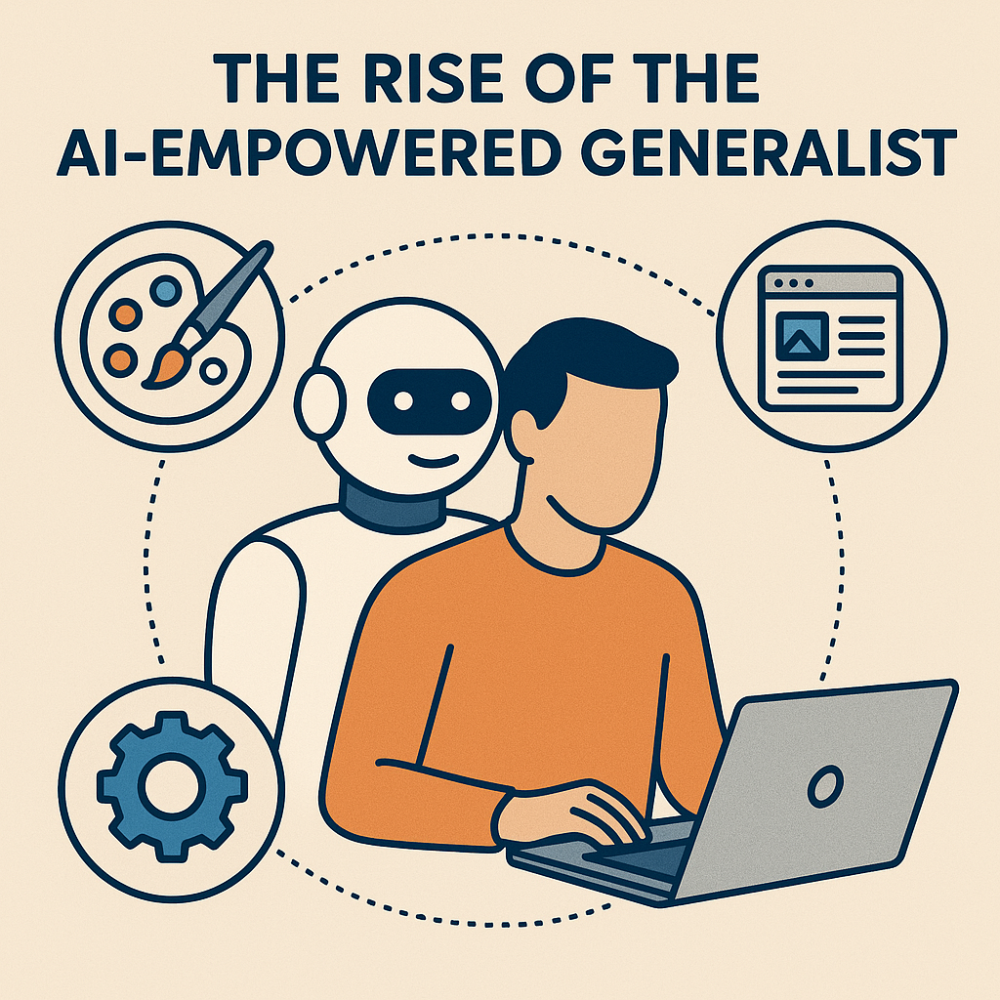

I've been thinking about generative AI a lot lately. The way it's reshaping what's possible for individuals working on projects got me wondering about the future of specialized roles versus generalists.
There's this common narrative that AI tools just make specialists better or more efficient at their specialized jobs - helping marketers create better marketing, designers create better designs, and developers write better code. But I think there's something much more interesting happening.

For the longest time, we've organized our work and careers around specialized disciplines. You're either a designer or a developer. A marketer or a product manager. A copywriter or a UX researcher.
These divisions made sense in a world where mastering each discipline required years of dedicated practice and the cognitive overhead of context-switching between disciplines was high.
But generative AI is fundamentally changing this equation.
A marketer who needs to prototype a landing page no longer needs to wait for design and development resources to become available. They can:
Similarly, a developer who previously might have outsourced design work can now:
What we're seeing isn't just specialists using AI to do their specialized jobs better or faster (though that's happening too). We're witnessing the rise of the AI-augmented polymath - people who can competently handle multiple aspects of a project by leveraging AI to fill in their knowledge gaps.
This doesn't mean everyone will suddenly become expert at everything. Rather, it means the threshold for "good enough" in adjacent disciplines is becoming much more accessible.
In the pre-AI world, specialists had a clear advantage: deep expertise that generalists couldn't match. But AI is rapidly narrowing this advantage in many domains.
Consider these scenarios:
Meanwhile, the generalist who understands multiple domains has a different kind of advantage - one that AI actually amplifies rather than diminishes: cross-domain fluency.
They can:
This is why the "jack-of-all-trades, master of none" stigma is rapidly becoming outdated. In an AI-augmented world, being reasonably competent across multiple domains while using AI to fill skill gaps might actually be more valuable than being exceptionally skilled in just one area.
Perhaps the most radical shift is how generative AI enables project autonomy. It's becoming increasingly feasible to run substantial projects from conception to completion as a single person.
Before generative AI, a typical product launch might require:
Now, a competent generalist with AI assistance can reasonably handle all these roles at a baseline level of quality that would have been impossible for a solo creator just a few years ago.
This is leading to what might be called an "indie renaissance" across multiple industries:
What makes this shift particularly significant is the pace of improvement in generative AI capabilities.
The gap between what a specialist can produce and what a generalist with AI assistance can produce is shrinking with each model iteration. And these iterations are happening at an unprecedented pace.
What seems like a modest advantage for the AI-augmented generalist today will likely be a substantial advantage within a year, and potentially a decisive advantage within three years.
As models improve, the value proposition of being a "pure specialist" in many fields will continue to erode, while the value of being adaptable, intellectually curious, and comfortable working across domains will increase.
The future increasingly belongs to those who can:
While there will always be roles for deep specialists, particularly in areas that resist AI automation, the economic and creative opportunities for generalists are expanding dramatically.
The "jack-of-all-trades, master of none" might be evolving into "jack-of-all-trades, master of AI collaboration" - and that could be the most valuable skill profile of the coming decade.
What do you think? Are you seeing this shift in your own work? Have you found yourself taking on tasks that would have been outside your domain pre-AI?